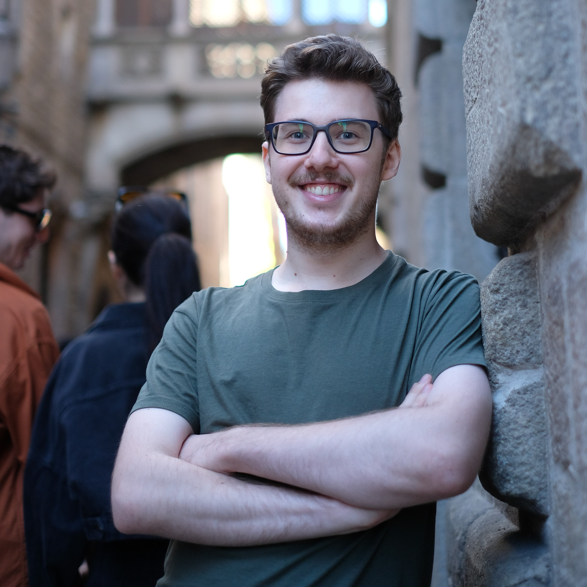

About Me
I am an incoming PhD student at Universitat Pompeu Fabra (UPF) in Barcelona, supervised by Prof. Ricardo Marques. My research interests lie in physically based rendering and path tracing — in particular light transport, Monte Carlo sampling, and path guiding. My background combines computer graphics, computer vision, and strong C++ engineering, from Vulkan engines to large-scale synthetic data pipelines.
At Snap Inc. (Specs / Spectacles), I built synthetic data generation systems using procedural generation, agentic workflows, MCPs, 3D Gaussian Splatting, and VLMs; improved sim-to-real quality (e.g. ControlNet and augmentations); trained and adapted vision models for 3D scene understanding with ablation studies; and ran GCP pipelines (Vertex AI, GCS) generating up to 5 TB of structured training data.
At ViewApp, I engineered C++ Unreal tools and world-building pipelines, automated builds with TeamCity, and helped ship a game to Steam, PlayStation 5, and Xbox. At Partium, I worked on Docker/Kubernetes microservices, CI/CD, Elasticsearch search, OCR, and computer vision models for spare-part recognition.
I hold a BSc and MSc in Media Computer Science from the University of Vienna (graphics and vision focus). German (native), English (C2), Spanish (A2).
- Bachelor thesis: CNN hand detection and pose recognition with a procedural Unity training-data pipeline.
- Master thesis / GAMEON 2025: procedural planet generation, LOD optimization, and real-time rendering performance.
- VulkanParticles — open-source C++20/Vulkan game engine with CI and unit tests (GitHub).
My inbox is always open — whether you have a question, an idea, or just want to chat, I am always happy to hear from you. I especially love discussing computer graphics and vision, and above all anything related to path tracing.

Recent News
November 2026
I will start a PhD at Universitat Pompeu Fabra (UPF) in Barcelona, supervised by Prof. Ricardo Marques. Research topic: TBA.
February 2026
My contract at Snap was extended by 3 more months, until the end of April.
January 2026
I received the University of Vienna merit scholarship (Leistungsstipendium).
October 2025
I will present my research at GAME-ON 2025 in Ghent.
September 2025
I was awarded with the UNIVIE Research Award for Students for my paper.
August 2025
I will start a new position at Snap as a Computer Vision Researcher.
My Projects
Finished Projects
- Path guiding in Wienori — integrated a path guiding algorithm into my Wienori path tracer to improve light transport sampling
- VulkanParticles — open-source C++20/Vulkan game engine; particle system, modular rendering, unit/integration tests on GitHub Actions (GitHub)
- Super Mario 64 ROM hack — C on the SM64 decompilation; level design in Blender; SimpleFlips Slide Hack Competition (2024)
- Bachelor thesis — hand detection and pose recognition with deep learning
- Master thesis — open-source procedural planet generator (GAMEON 2025) with adaptive LOD and performance-focused rendering
- University Vulkan engine — performance-critical C++, cloud gaming, FFmpeg encoding pipeline
- GPT-2 from scratch — systems-level study of LLMs (Andrej Karpathy's course)
Education
Master of Media Computer Science
University of Vienna, Austria
Graduated: November 2025
Grade average: 1.58 (1 = excellent, 5 = insufficient)
Bachelor of Science in Computer Science
University of Vienna, Austria
Graduated: January 2023
Grade average: 2.32 (1 = excellent, 5 = insufficient)
Licenses & Certifications
- C2 Proficiency - Cambridge English (Issued Feb 2024)
- CS50's Introduction to Game Development (edX, Issued November 2022)
- AWS Cloud Practitioner (Issued July 2022)
- CS50's Introduction to Computer Science (edX, Issued February 2021)
- Unreal Engine Certification (Udemy, Issued August 2020)
Competitions
- Participant in the SimpleFlips' Slide Hack Competition (2024) (Project included in the "Projects" section).
Publications
Comparative Analysis of Procedural Planet Generators
GAMEON 2025 · October 2025
Paper accepted and presented at the GAMEON 2025 conference.
Awards
Leistungsstipendium
University of Vienna · January 13, 2026
Received the Leistungsstipendium (Merit Scholarship) from the University of Vienna for outstanding academic performance.
UNIVIE Research Award for Students
University of Vienna · September 19, 2025
Received the UNIVIE Research Award for Students for outstanding research contributions.
Work Experience
PhD Student
Universitat Pompeu Fabra (UPF) · Full-time
Nov 2026 – Present
Barcelona, Spain
Supervisor: Prof. Ricardo Marques. Research topic: TBA.
Computer Vision Researcher
Snap Inc. (Specs / Spectacles) · Full-time
Aug 2025 – May 2026
Built synthetic data generation systems using procedural generation, agentic workflows, MCPs, 3D Gaussian Splatting, and VLMs to create training data for vision models. Improved generated data with augmentations and methods to bridge the sim-to-real gap, like ControlNet.
Trained and adapted vision models for 3D scene understanding, proving effectiveness of generated data with ablation studies.
Engineered large-scale data generation pipelines on GCP (Vertex AI, GCS), generating up to 5 TB of structured data to train robust vision models.
Collaborated closely with the team through reading groups and cross-functional discussions, and proactively supported team efforts.
Multimedia-Software Engineer
ViewApp GmbH · Full-time
Jan 2025 - Jul 2025 · 7 months
Wien, Österreich · On-site
Designed and developed C++ tools in Unreal Engine to streamline artists' workflows and improve production efficiency.
Took full ownership of a major game tutorial feature — gameplay logic, design, bug fixes, and polish.
Resolved production bugs to improve system stability and end-user experience.
Multimedia-Software Engineer
ViewApp GmbH · Full-time
Jul 2024 - Sep 2024 · 3 months
Wien, Österreich · On-site
Designed and developed C++ tools in Unreal Engine to streamline artists' workflows.
Automated game builds with TeamCity, reducing manual effort and minimizing release errors.
Resolved production bugs to improve system stability and end-user experience.
Software Engineer
Partium · Part-time
Oct 2022 - Mar 2024 · 1 year 6 months
Vienna, Austria · Hybrid
Deployed and maintained microservices with Docker and Kubernetes in beta and production environments.
Improved CI/CD pipelines with additional automated checks and tests, increasing release reliability.
Integrated Elasticsearch into the search stack, improving query performance on large spare-parts catalogs.
Built developer tooling (custom linters) and integrated an OCR component into the product.
Trained and evaluated ML models for spare-part recognition (Python).
Software Engineer (Internship)
Partium · Full-time
Jul 2022 - Sep 2022 · 3 months
Vienna, Austria · On-site
Evaluated and integrated Elasticsearch as the search backend, achieving notable speed improvements on large datasets.
Collaborated in a cross-functional Agile team on CI/CD pipelines and testing workflows.
CV
Download or preview my CV below:
Contact
You can always send me a message with the following form: